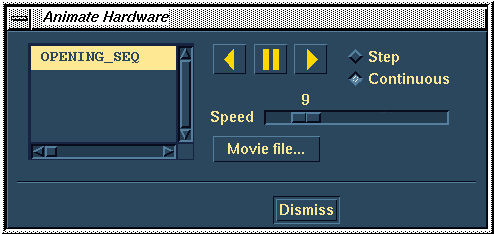

Page 4 of 7
Next Page
Previous Page
First Page
User 2
Get the Mold Complete assembly to the workbench.
User 2

Animate the tool operation.
User 2
Show that User 2 is Referencing the Filler Cap.
Next Page